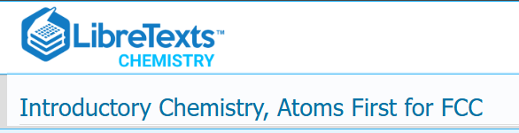
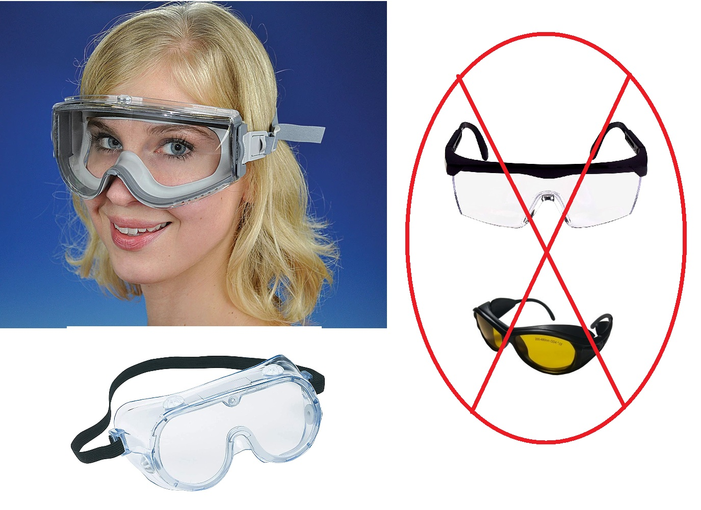

Welcome Message
Welcome to Chemistry 3A.
In this class, we’ll not only build a strong foundation in chemical principles—like atomic structure, bonding, stoichiometry, and thermodynamics—but also learn how chemistry connects to real-world phenomena, from medicine and materials to the environment and beyond.
This course includes both lecture and lab components. Come ready to think critically, ask questions, and get hands-on in the lab. Mistakes are part of learning here, and curiosity will propel you to success in this course.
Please make sure you can access course materials through the Canvas LMS app, and read the section of the syllabus below of how the app will be utilized.
Just as I will endeavor to make sure all your submitted work is scored quickly and provides you the timely feedback you need to understand your priorities and focus in learning, you should stay on top of this course, and manage the pace so as not to fall behind.
The textbook for this course is a supplement to your learning. Your homework, your quizzes, the content of the lecture (instructor's words, the PowerPoint slides) and in the laboratory is your primary resource. But the entire textbook is open for you to read and work its problems. Any problem you don't understand in the text you can always ask the instructor to explain and help you solve. And that includes any other question or problem you find in any resource.
Successful students of chemistry will work as many problems and answer as many questions as are possible in the time they have,
I look forward to getting to know each of you and to a great semester of discovery. Let’s make this an excellent journey into chemistry together.
Mitch Halloran
Instructor
Mitch Halloran
Adjunct Lecturer in Chemistry
[Part-time Instructor in Chemistry]
Please see Communication Plan for the many ways we will and should interact
Course Description
Chemistry for applied science and non-science majors. The scientific method; chemical computations; composition of matter, energy, and physical and chemical changes; fundamental laws and principles; atomic and molecular structure; bonding; inorganic nomenclature, kinetic molecular theory, gas laws, solutions, acid-base theories, oxidation-reduction, equilibrium, nuclear chemistry, and qualitative and quantitative theories and techniques. MATH 103 is recommended as a prerequisite for allied health and nursing majors and MATH 3A is recommended as a prerequisite for STEM majors. (A, CSU, UC, Cal-GETC)
Course Objectives
- Identify and apply the steps of the scientific method.
- Use and estimate the magnitude of units in the metric system.
- Perform chemical computations and apply dimensional analysis.
- Use and interpret the periodic table.
- Apply nomenclature to naming and writing of chemical formulas of common ions and compounds.
- Classify elements, common ions, and compounds given the name or the chemical formula.
- Classify and construct balanced chemical reaction equations.
- Use fundamental laws, principles, and theories to predict and evaluate the structure and properties of elements, compounds, and ions.
- Apply dynamic equilibrium concepts to evaluate the equilibrium distribution of reactants and products in chemical equilibrium reactions and perform equilibrium calculations.
- Use atomic theory and radioactivity concepts to evaluate properties of elements and their isotopes.
- Operate safely in a laboratory environment and use basic equipment to make measurements and collect data for processing.
Course Student Learning Outcomes (SLOs)
- Apply appropriate theories and techniques to solve quantitative problems.
- Apply appropriate theories and techniques to solve qualitative problems.
- Collect, record, organize, and analyze experimental data, and recognize the limitations of measurements.
Prerequisites/Corequisites and Advisories
- Prerequisite: MATH 3A or MATH 103
You should understand the principles of algebra, especially how to solve for a single unknown (variable) on one side of the equal sign and all the values needed to solve it on the other side of the equal sign. Basic arithmetic (addition, subtraction, multiplication, division) including priority of operations should be something done effortlessly.
- Corequisite: None
- Advisory: None
- Anti Requisite: None
Materials/Resources For the Course
| Official Course Text | |
|---|---|
|
 |
This course will make available at no cost the reading material (OER) to supplement what you need to learn for this course. It is strongly advised that students read and comprehend using active learning techniques the recommended reading for this course Introductory Chemistry, Atoms First for FCC (LibreText) This is the official course text. In this syllabus in the course calendar, the student will find the references to read for the semester. This resource is vvailable online directly and at no cost to the student. |
| Safety Goggles | |
|
 |
The Chemistry Department requires students to use safety goggles with full protection covering eyes from front and side. Goggles must create a tight seal on the face/head around the eyes so that the risk of liquid contacting the eyes is virtually nil. In the past, the FCC Bookstore has made goggles available for purchase. At this time, no link is available through the bookstore (this might be updated at lecture time). However, goggles can be obtained in many locations in-store and online (e.g. Amazon). The department often has spare goggles available for use during a lab session, but this availability is not guaranteed (however, the supply of goggles is typically considerable compared to lab coats). Goggles are often useful in other aspects of living for eye protection, even around the household, so consider the purchase of them. |
| Laboratory Coat | |

|
Proper protection in the laboratory requires the use of an appropriate lab coat. It requires that the bottom hem of the coat go down to the knee (no waist coats!), or at a minimum, the hem should be mid-thigh. Where To Obtain. The FCC Bookstore has provided lab coats for sale in the past. A URL used to be available, but the Bookstore is undergoing a reorganization presently and a search did not show an online reference. You can inquire at the Bookstore. Lab coats can be obtained anywhere at a store or online however, and within a reasonable price for student's budget. At any request by a student, the instructor can search for products which are very economical and acceptable for use in the laboratry. The department often has spare lab coats available for use during a lab session, but this availability is not guaranteed. If a student is pursuing a career in an allied health profession, it is recommended that the student purchase a low-priced lab coat anyway that might be used both in course work and on the job in the future. |
| Scientific Calculator | |

|
A calculator will be necessary when taking examinations for this course, since smart devices (laptops, tablets, phones, etc) are not allowed during examinations. Calculators should the non-graphing type for use with examinations. The TI-36Xpro is a non-graphing calculator strongly recommended by Chemistry Department. The FCC Bookstore has the Ti-36Xproj available for ordering online (see URL). The calculator should be brought to all class sessions. |
| Examination Test Forms | |
 |
Midterm examinations. This course has four midterm examinations done during lecture sessions, with students being given a printed sheet with questions and responding with answers on optical mark recognition (OMR) forms. In previous semesters, students needed to purchase Scantron Form 95677 (available at the bookstore) to mark their answers. But in the previous semester, this particular course developed a 50Q OMR form that is printable and thus more convenient and lower cost. Students can elect to use the Scantron Form 95677 or the 50Q OMR form to indicate their responses. If students use the 50Q OMR form, they MUST be careful to print the form with its anchor squares Final examination. The final examination is not prepared by the instructor but rather the Chemistry Department. Students are required to use the Scantron 95677 test form and cannot use the 50Q OMR form. This is because these test forms are archived by the department and not the instructor. Students should make sure close to the end of the semester when the final exam is given that they obtain a Scantron Form 95677 to sit for the examination. Correct pencil. Test form readers which include Scantron scanners and software that reads the scanned pages of 50Q OMR forms are only able to record student responses successfully if students use the correct pencil. Students should use pencil cores ("lead") graded HB (equivalent to "#2") or darker. Scantron 95677 forms can be obtained from the FCC Bookstore. |
Canvas LMS (Canvas App) & Open Educational Resources (OER)
The College makes use of Instructure's Canvas Learning Management System (LMS) for instructors to interact with their students.
Students authenticate with the web-based app and will find all information and materials they need to do homework, reading, and many other things.
Students should take note of the following features of Canvas that will be integral to this course, which are navigated on the left side of the Courses menu item in the Canvas app user interface:
- Announcements
This feature will be used to communicate important messages from the instructor throughout the semester. The Announcement message will be brief usually, and it may contain links to other resources within Canvas or even external to it. It will be used to alert students of something upcoming generally. It may also be used the give some details of exam results or other scoring activities and assessments. - Modules
This feature is likely to be the most used go-to item for students. Canvas Modules collect together all the resources that are also found in Assignments, Pages, Quizzes, and other elements of Canvas into a logical grouping. The Canvas Module is the best way to organize related resources that can be hard to locate in other features of Canvas.Modules will be organized by weeks. Each week there will be homework assignments, quizzes before lecture and lab sessions.
- Assignments
The Canvas LMS has the Assignments feature for instructors to create tasks, activities, and assessments (homework, quizzes, exams, surveys, reflections, engagements) for students that are graded or ungraded. Assignments are what is shown in the Gradebook. (Note: every task/activity/assessment may not be available through Assignmnents as some instructors prefer students to access these through Modules.) - Zoom
The instructor will use Zoom to create virtual drop-inoffice
hours with regularity, and in accordance with College standards for instructors in their working category. Most importantly, the instructor can work on arranging interactions outside of scheduled virtual drop-in hours. - Grades
The Canvas Gradebook feature will clearly be of the most interest to the student to see their progress as they move through the semester. Individual assignments (homework, exams, quizzes, etc) will have scores of student, the maximal points. The student will be most interested in the total score (typically given as a percentage) of their scoring in the course. See the section on Grading & Scoring for more information about this aspect of the course. - Attendance
Canvas will be used to keep attendance records. If the student sees an absence recorded when that student was truly present, contact the instructor.While attendance does not affect course grade, the recording of attendance is required by state regulation for all community colleges like Fresno City College. Attendance records might possibly affect a student's status outside of the course, such benefiting from financial aid. Students must always know how attendance can affect their status and should get information from their counselors about this.
- Files
Note: This feature may not be visible to students as there will be an effort to make file-based resources accessible through Modules.Students may use this feature frequently. Resources that are file-based will be found here. That would include files related to lectures and laobratories.
Note that not all files that might be visible in this feature are files to be procured by the student. Some files might show visibility but they are probably media (like images) used for web pages that are part of Canvas resources.
- Quizzes
Note: This feature may not be visible to students as there will be an effort to make items of this type accessible through Modules..Practice exams and exam question sets are usually located here by the LMS, but , but they ar be accessible through Modules, if the instructor is proficient and expert in the use of Canvas Modules.
MyOpenMath Integration
The Pre-Lecture, Pre-Lab, Laboratory Reports (it might read Data Reports
), and certain Homework assignments (Chapter Review and Previews) will have a special look in Canvas that is a user interface of MyOpenMath OER. These MyOpenMath assessments were developed with great care and effort by another (full-time) Chemistry Department instructor and are really part of a collaboration of many chemistry instructors from other institutions wanting to adopt the MyOpenMath system. (Note that "MyOpenMath" may be referenced in the semester frequently with the acronym MOM or MoM.)
MyOpenMath, an interactive online platform designed specifically for science and mathematics. This tool provides several advantages to support learning:
- Immediate Feedback: Students do not always wait for the instructor to grade an activity, and MOM enables immediate evaluation with multiple efforts to get wrong responses in correct form, learning from mistakes in real-time.
- Video & Resource Integration: This tool can include access to "Video" or "Message Instructor" buttons directly within the assignment, and provide help exactly when getting stuck.
- Infinite Practice: A feature of many questions are algorithmically generated. This means students can often "Try a Similar Question" to master a concept without penalty before moving on. The future of teaching and learning is the deep integration of Artificial Intelligence systems to accelerate learning in real-time
- Seamless Integration: All ur assignments are linked directly through Canvas Modules. Scores will automatically sync to the Canvas gradebook, keeping students updated on course standing.
Communication Plan
Unlike full-time instructors of the College, part-time instructors are not assigned their own offices and they do not have telephone numbers which students can call. But this has never been a problem, since there will be plenty of ways to interact throughout the semester.
- Canvas Inbox: students typically use this as they have learned of its utility quickly. Students should be sure to enter a Subject using a few words that makes the point of your message easily, then get into necessary but concise detail in message body
- email: mitch.halloran@fresnocitycollege.edu
- In-person and virtual drop-in (online via Zoom)
Office Hours
:
at the start of each semester, part-time instructors (adjunct lecturers) submit aproposal
to the College which indicates specified dates and times in the semester in which the instructor will provide office hours either in-person or online (virtual, via Zoom), or both.History shows that the approval of office hours is not always at the start of the semester (the previous semester did not approve hours until the third week). Be that as it may, an attempt will be made to offer office hours prior to approval if delay is untenable.
If students are concerned by any perception of very limited hours of availability, students should be aware the history of the instructor is such that many hours have been provided to students well in excess of those formally requested by the instructor and approved by the College.
Live and Persistent Chat
Students should be aware of additional communication resources popular with instructors and students. (The instructor's limited experience at the College has yet to expose him to these resources.)
There are essentially two options here:
- Canvas Chat
It is already built into Canvas, so there is no setup or technical hurdles. This puts everyone, students and instructor, in a singleroom
. This can be a disadvantage if students want to communicate with each other alone or in groups. - Discord
This service offers the ability to create channels which can isolate messaging. One channel will be a general room where all can come or go. It is often called alobby
, but this is not just an entry point but where all can come and ask question or provide answers.For students who want to have specific interaction with other students, particularly for study group, channels can be created for this purpose. Additionally the instructor can create channels where the instructor does not enter and will be private for students. More details and information to be given on a Canvas page.
Attendance Policy
District and College policy requires instructors record the attendance of students in lecture and laboratory sessions. For this reason, the following policy on attendance should be adhered to by students:
Commitment To Attend
When a student enrolls in a course, the student makes a commitment to do the work of the course, and part of that work is to be present, to attend to the course in the hours designated for that purpose. The College, the Department and the instructor realize that certain events can interrupt that effort and commitment—car trouble, family crises/emergencies—and efforts will be made at reasonable accommodation in the 18 consecutive weeks you plan to learn chemistry.
Recording of Attendance
All students must be able to register their attendance (through a smartphone or other device with browser) through an online polling system. This will be explained on first day of lecture.
It has become necessary for the recording of attendance to be done within a limited time range of the lecture or laboratory session, as students not attending sessions are able to obtain attendance codes and record themselves as attending. These codes will be active for a limited time period specific to the session.
Lecture Attendance
- Enrolled students must attend lecture on the first day of the first week of the semester, or they will be dropped from the course. No exceptions.
- Within the period where students can drop the course, failure to attend a combination of three lecture or laboratory sessions will result in a message from the instructor warning about and resulting in being dropped from the course.
- Failure to register attendance of lecture or laboratory sessions by the student is going to be monitored by the instructor, resulting in a warning message, and especially if there is an association of worrisome performance by the student on examinations and other assignments, particularly failures to submit work at all or in a timely manner.
- Students missing (who are marked absent) lectures are still responsible for the lecture content
- Unfortunately the Canvas Roster does not have
- Exams and quizzes and other in-lecture assignments missed by absent students cannot be made up and these assignments will be scored as a zero. Check the section of the syllabus concerning very limited opportunities related to "make-up" (exam retake, possible extra credit)
Lab Attendance
The attendance of the laboratory sessions is not optional. It is part of the course. Missing two laboratory sessions during your active enrollment in the course within period of the semester before the drop deadline can result in the instructor dropping the student from the course. Because of the logistics of the course, it is not possible to make up a laboratory experiment once the week has ended for the laboratory, and it is not possible to do laboratory work outside the scheduled lab sessions.
- On-time arrival. Being prompt is an absolute requirement for laboratory sessions. This should not be an issue since lab sessions begin right after lecture ends. The reason students must be present at the beginning is because the lab sessions are first introduced by the instructor, and this usually includes a talk about safety. If a student misses the safety talk, they will not be permitted to attend that lab session and be marked as absent.
- Attendance of lab sessions will be registered online and the polling of attendance will be explained. Students attempting to submit reports due by assignment who are not registered as attending the session will have those reports ignored and scored as a zero.
- Switching lab session days.
- Permanent switching. There is always the possibility of a student switching the day they will do the lab session to the other day. That is, if a student has a Tuesday lab day, the student might switch to Thursday instead. But this generally can only happen if there is space in the lab, as there are 30 spaces per lab session. At the start of a semester, things are generally (hopefully) full. That would require a student wanting a switch needing a student in the other session to switch to the day that student wants to make open. Students must always come to the instructor with any request to switch lab days permanently since this is a soft record kept by the instructor for the semester. According to the College, the student will still be enrolled in the section for the original day, but that is unimportant for arranging the needs of all students.
- Temporary switching. Students often know ahead of time that perhaps they miss their Tuesday lab but want the opportunity to do that one particular lab that week on the Thursday session. The same for students who have Thursday lab and need to instead come on Tuesday for that week. Usually this is not a problem if it happens once or twice during the semester, and a student does not miss the lab. Even if a student has an unexpected event that causes them to miss their Tuesday lab, they can often come Thursday.
Drop Policy & Deadlines
Procedures for dropping courses are specified by the College through many resources, namely the college website and also in the Spring 2026 Class Schedule, which is teeming with information.
See the section on Attendance above since students can be dropped from the course administratively for not complying with rules concerning course participation and attendance.
| Instruction begins | |
| Last day to DROP from 18-week class with fee refund/reversal | |
| Last day to ADD class or to DROP without a "W" grade recorded using the IN-PERSON process (that is with College office is open during normal weekday operations) [the online Self-Service deadline is two days later] | |
Last day to ADD class or to DROP without a "W" grade recorded using the online process (the Self-Servicetool) [the in-person process deadline is two days earlier during a weekday] |
|
| Last day to DROP with a "W" grade. (After this deadline, the student will be scored for any and all semester work with a regular letter grade.) |
|
| Deadline to petition 18-week course for Pass/No Pass grading | |
| End of |
For any questions related to these academic and adminstrative matters, consult our college counselor. ALL students should have a college counselor answering questions and guiding them in every way in their educational program and pursuits.
Participation and Engagement
When you enrolled in this course, and generally when you enroll in any course of the College, you indicate your commitment to giving a best effort to being a scholar, and to learn the discipline of chemistry. This includes attending lecture and spending the requisite time to study the concepts presented at lecture.
For the 2.5 hours of lectures and 2-3 hours of laboratory sessions per week that you will be on campus, you should expect to spend another 4-8 hours per week involved in studying and doing practice exam questions ("homework") as well as the work to prepare and submit laboratory reports. The actual time commitment will vary depending on the ease with which you can learn chemistry.
As for the laboratory work for this course, you should prepare before attending a session. Pre-lab quizzes will be given to prepare you for certain concepts you should understand before undertaking the laboratory activity. This pre-laboratory learning will help you be much more efficient in observation (what to look for), data collection and analysis during the laboratory session. Your submitted report will be of outstanding quality as well.
Early in the semester, we will cover various safety rules. If you do not follow these rules while you are in the laboratory, you will be asked to leave and you may be dropped from the course.
The table below shows the schedule of the content covered in the lecture and the laboratory periods. The content for the laboratory sessions is certain: it will be covered in the week shown. The content for lectures is more fluid as to what date it will be covered, since it depends on whether the instructor spends more time on one topic versus another. It is certain that the content will be covered and completed for all lecture sets pertaining to midterm examinations. Midterm examinations are given on the first day of a week (Tuesday), covering the weeks of the previous lecture sets. This structure was means that the student gets the weekend to prepare for any exam covering the previous lecture sets, a more satisfying course scheduling with the hope of reducing stress for the student.
| Week | Lecture | Lab |
|---|---|---|
| Lecture Set (LS) 1 The Math of Chemistry: Scientific Notation, Significant Digits/Figures |
Lab Safety Contract Expt 0a: Burets, Pipets, Volumetric Flasks |
|
| LS 2: Atomic Structure, Periodic Table, Ions, Isotopes, Atomic Mass | Expt 1a: Making Measurements | |
| LS 3: Waves, Quantum Model, Electrons & Configations, Periodic Trends | Atomic Mass Calculations | |
|
Tue: Midterm Exam 1: Lecture Sets 1-3 Thu: LS 4: Elements, Compounds, Mixtures |
Expt 2a: Electrons | |
| LS 4: Nomenclature LS 5: The Mole, Molar Mass |
Expt 4a: Law of Constant Composition | |
| LS 5: Formulas: Empirical and Molecular LS 6: Lewis Structures, Molecular Shape |
Expt 4b: Rolling for Compound Initiative | |
| LS 6: Molecular Polarity, Intermolecular Forces LS 7: Properties of Liquids and Solids |
Expt 5a: Empirical Formula | |
| T Thu: LS 8: Gases (Gas Laws) | Expt 6a: Molecular Modeling | |
|
Tue: Midterm Exam 2 (Lecture Sets 4-7) Thu: LS 8: Partial Pressures |
Expt 7a: Calorimetry | |
| LS 9: Solutions, Molarity, Colligative Properties | Expt 8a: Determination of Ideal Gas Constant, R | |
| LS 10: Reactions: Types, Balancing, Product Prediction | No experiments: other activities | |
| LS 10: Redox Reactions, Activity Series | Expt 9a: Solutions and Dilutions | |
| Tue: Midterm Exam 3 (Lecture Sets 8-10) Thu: LS 11: Limiting Reactant & Yield |
Expt 10a: Types of Reactions | |
| LS 12: Reaction Rates, Equilibrium, Equilibrium Constant, Le Chatelier's Principle (Mass Action) | Expt 11a: Synthesis of Alum | |
| LS 13: Acids and Bases, pH and its Calculations | Expt 12b: Determination of Citric Acid in Soft Drink | |
| LS 14: Nuclear Chemistry | No Experiments: Review for Lab Practical, Exam Retakes | |
| Tue: Midterm Exam 4 (Lecture Sets 11-14) Thu: Final Practice |
Lab Practical | |
| FINALS WEEK: |
||
Student Work Product
Course scoring will be evaluated as follows
| Midterm Examinations | 44% | 4 exams; each: 25 multiple-choice questions 10 true-false questions |
| Homework | 15% | Homework assignments will look back (review) what wa done
to ensure learning, and test preparation in looking ahead to next subjects.
Problem Sets and Practice Exam Questions. These will be offered as graded and ungraded assignments. Student participation in the assignments will be recorded by Canvas and used by instructor to understand what issues are involved in learning the material. The class as a whole or students individually may get a message from the instructor to address learning issues. |
| Pre-Lecture Quizzes | 4% | These quizzes should be taken before lecture and after the reading assigned as part of the preparation for the lecture |
| Laboratory Reports & Pre-Lab Quizzes | 20% (17% + 3%) |
|
| Lab Practical | 5% | Test of ability to observe and perform a few reactions and make lab-related calculations moving through 10 stations |
| Final Exam | 12% | This is a multiple choice nationally standardized exam with usually 50 questions taken in a 60 minute period testing general chemistry knowledge covered in the Chem 3A course. IMPORTANT BONUS. The student's score on the final examination will replace the lowest score of any of the midterm examination scores if the score on the final exam score is greater than the lowest of the midterm scores. |
Exam Retake. A student is eligible to retake any of midterms 1, 2, or 3 near the end of the semester. Only one retake can be chosen. The student must have scored below 90% on the original exam for which the student wants to retake. The request for the retake must be in writing (Canvas Inbox or email message). In the brief message, the student should explain why they think they got the score they did, and what study/work they have done to improve the score on the retake. Include in the message any request for additional assistance if necessary. The retake score will replace the original score, if it is higher.
Dropped Low Scores.. There are no make-ups on laboratory report submissions. However, the instructor implements the following as part of course scoring and grading for Assignment Groups (a Canvas categorization):
- Laboratory Reports: lowest report score dropped
- Homework and Homework Review: two of the entire series of homework and homework reviews are to be dropped
- Pre-laboratory quizzes: no quiz is dropped because of the importance of preparation, and the completion is easy to do as well
- Pre-lecture quizzes: two will be dropped
How Canvas Handles Dropped Scores During the Semester
- Real-time Recalculation: Every time a new grade is entered, Canvas evaluates all currently graded assignments in that group and drops the score(s) that maximize the student's current assignment group total.
- Minimum Assignment Threshold: For Canvas to drop a score, the group must contain enough graded assignments to satisfy the rule. For example, if you set Canvas to drop the 2 lowest scores, Canvas will only start dropping scores once a student has at least 3 graded assignments in that group (1 kept + 2 dropped).
- Point-Based Maximization: Canvas determines which scores to drop based on what yields the highest overall score percentage for that group, which means point values matter if assignments in the group are worth different total points.
- Note: As new assignments are graded throughout the semester, the specific assignments being dropped can shift dynamically based on which ones currently benefit the student's total grade the most.
None of the midterm exam scores are dropped. As explained elsewhere, students get to retake one of the first three midterms and also their score on the final replaces the lowest score of any of the four midterms, if the final score is higher. Thus there are many opportunities for students to excel after perhaps a rough beginning.
Late Work Policy
Timely submission of assignments is essential for keeping up with the course and mastering the material. However, it is understood that life can sometimes interfere with even the best-laid plans.
Standard Late Penalty. Assignments submitted late without prior communication will incur a 10% deduction per calendar day, up to a maximum of 50% off. Work more than five days late will not be accepted unless there are extenuating circumstances discussed with me in advance.
Grace Period: Each student will receive a one-time, 48-hour extension (no penalty) that can be applied to any one assignment during the semester. No questions asked just notify me before the original due date that you're using it.
Extenuating Circumstances: If you are dealing with illness, family emergencies, or other serious issues, please communicate with me as early as possible. I will work with you to find a solution, which may include extensions or alternative arrangements.
The goal is to balance fairness and structure with understanding and support. If you anticipate difficulties, reach out before deadlines whenever possible.
Class Norms
[Credit: composed long ago by another instructor, but seemingly still relevant (with edits)]
Respect is the baseline.
We will treat each other with courtesy, patience, and professionalism—whether in lecture, lab, online discussion, or email.
Be present and engaged.
Show up on time, minimize distractions, and participate actively. Engagement includes asking questions, helping peers, and contributing thoughtfully to discussions.
Mistakes are part of learning.
Chemistry can be challenging—don’t be afraid to try, ask questions, or make errors. You’re encouraged to be curious and take intellectual risks.
Collaborate with integrity.
Working with others is encouraged where allowed—but you must submit your own original work unless group collaboration is explicitly required.
Communicate professionally.
Use respectful tone and complete sentences in emails, forum posts (like Piazza), and during class discussions. Start emails with a greeting (“Hi Professor [Last Name]”) and sign off with your name.
Honor lab safety and shared space.
In labs, safety is non-negotiable. Follow all protocols, clean up
after yourself, and treat shared equipment with care.
Respect diverse perspectives.
We come from varied backgrounds and experiences. Listening actively and disagreeing respectfully is part of maintaining an inclusive learning environment.
Please adhere to the policy on academic honesty and integrity, especially in the use of technology (smartphones and other smart devices).
Accommodation for Students with Disabilities
I aim to create an inclusive learning environment and respect the need for accommodations. To access tools and/or services for disability-related needs,you must be registered with the DSP&S (Disabled Students Programs and Services) office on campus. DSP&S can be reached at (559) 442-8237 and is located in Building A. If you are already registered with the DSP&S office, your counselor will provide me with your Faculty Notification Letter.
Your success is important to me. If your accommodation includes taking tests in the DSP&S office, it is your responsibility to make an appointment to take the test at least 3 business days before the day and time of the in-class test and to inform me of the appointment.
Please contact DSPS or talk with me as soon as possible if you have any questions.
Academic Dishonesty Policy
Students at Fresno City College are entitled to the best education that the college can make available to them, and they, their instructors, and their fellow students share the responsibility to ensure that this education is honestly attained. Because cheating, plagiarism, and collusion in dishonest activities erode the integrity of the college, each student is expected to exert an entirely honest effort in all academic endeavors. Academic dishonesty in any form is a very serious offense and will incur serious consequences.
Cheating
Cheating is the act or attempted act of taking an examination or performing an assigned, evaluated task in a fraudulent or deceptive manner, such as having improper access to answers, in an attempt to gain an unearned academic advantage. Cheating may include, but is not limited to, copying from another’s work, supplying one’s work to another, giving or receiving copies of examinations without an instructor’s permission, using or displaying notes or devices inappropriate to the conditions of the examination, allowing someone other than the officially enrolled student to represent the student, or failing to disclose research results completely.
Plagiarism
Plagiarism is a specific form of cheating and is the use of another’s words or ideas without identifying them as such or giving credit to the source. Plagiarism may include, but is not limited to, failing to provide complete citations and references for all work that draws on the ideas, words, or work of others, failing to identify the contributors to work done in collaboration, submitting duplicate work to be evaluated in different courses without the knowledge and consent of the instructors involved, or encouraging, permitting, or assisting another to do any act that could subject him or her to discipline. Incidents of cheating and plagiarism may result in a variety of sanctions and penalties that may range from a failing grade on the particular examination, paper, project, or assignment in question to a failing grade in the course, at the discretion of the instructor and depending on the severity and frequency of the incidents.
Support Services
Services available to students:
| Health Services Office | Health services available to Fresno City College students include confidential health counseling, health education, screening tests, emergency first-aid, assistance in obtaining medical care, and TB clearances. Services are provided by Public Health Nurses and are funded by the student health fees.
A Dental Hygiene Clinic is also |
| Tutorial Services |
The services include:
|
| Psychological Services Office | Message: The W. Gary Cannon Psychological Services Center is offering 10 sessions of individual therapy (free of charge) to currently enrolled Fresno City students. We highly recommend you take advantage of their services if you are interested in therapy. |
| RAM Pantry | The Ram Pantry is a free food assistance program for college students currently enrolled at Fresno City College. The Ram Pantry believes that food insecurity and hunger should not be a barrier to success for students. The goal is to increase the graduation and course completion rate of our students.
The Ram Pantry addresses this goal through free food assistance so that students in need can focus on classroom success rather than have hunger deter them from finishing their education. |
| Virtual Hub for Students | [This can be found inside the Canvas LMS app.] Message: The Virtual Hub for Students is an online space designed to support your success in online learning. Here, you can learn how to navigate and use Canvas for your online classes, explore strategies for becoming a successful online learner, and access information about on-campus services. The tools and resources will help you stay informed, be more confident and engaged in your learning experience. |
Final Exam Date
Final Exam: